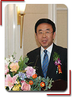
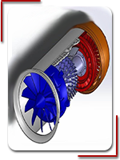
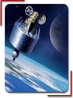
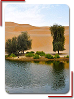

林俊德院士：攻坚克难，自主创新
大漠铸“核盾”，生命写忠诚
从1964年中国的第一颗原子弹爆炸，到1996年中国进行的最后一次地下核试验，参与了中国的全部45次核试验。 林俊德是“核试验冲击波机测仪器研制小组组长”。面对西方国家的技术封锁，他们用了半年时间研制出了第一台样机，一年后成功用于中国的第一次核试验。
1987年，林俊德把冲击波测量技术成功应用到常规兵验。武器试验中，他带领项目组发展了声电报靶技术、声电落点定位技术，解决了国际上大面积立靶自动检测的难题，研制的设备系统已装备于中国多个试验靶场和公安部门射击训练场。
20纪90年代，启动核试验地震、余震探测及其传播规律研究，全面收集分析全球地震数据，把地下核试验应力波测量技术向核试验地震核查技术拓展，为中国参与国际禁核试核查赢得了重要发言权。
2001年当选院士后，他主动担纲某重大国防科研实验装备的研制任务，在各种方案分歧很大的情况下，他带领攻关小组连续攻克方案设计、工程应用、实验评估等难关，最终取得了关键技术的重大突破，研制了适合各种实验要求的系列重要装备。
2015年，病重的林俊德依然坚持工作，5月病逝林院士的一生，是热爱祖国与执著事业的完美结合，是深厚学养与高尚品德的完美结合，是严谨作风与科学方法的完美结合。”基地研究所政委李文泉连用3个“完美结合”，表达对林院士的敬仰。

黄胜延:工作就是不断攻克难关
让航空产业在天津起飞
日前，由天津波音复合材料有限责任公司(以下简称“BTC”)生产的天津-波音737雷达罩首件成功交付，这比预期时间整整提前了一个月。这样的制造水平让厂商竖起大拇指，也让项目经理黄胜延颇感自豪。
让更多的飞机零部件贴上“天津制造”的标签，拥有国际一流航空制造水平，一直是BTC不断创新发展的“原动力”。 飞机蒙皮仅几毫米厚，但飞机却能够承载60吨至300吨的重物飞上蓝天，这究竟是如何办到的？9年前，作为一名在机缘巧合下来到BTC工作的机械专业毕业的大学生，黄胜延也不是很明白。
但如今，他已经成为一名项目带头人，带领着一批像他一样对航空事业充满热情的年轻人，完成着不允许存在丝毫误差的项目。每一个产品的成功交付，都需要他们攻克无数个技术难关。
2015年发布的《中国制造2025》，围绕实现制造强国的战略目标，明确了九项战略任务和重点，提出了八个方面的战略支撑和保障。提出大力推动十大重点领域突破发展，航空航天装备位列其中。
作为波音公司与中国航空工业集团共同在天津投资兴建的航空制造型合资企业，BTC仅仅用了16年就达到了百万件的生产水平。目前，BTC拥有1000多名员工及数百名供应商驻厂服务员工，是天津首家以及人员规模最大的航空制造企业。

中国发动机研制是生产一代、研制一代
预研一代、探索一代。
关于国产发动机涡扇15的好消息可谓接连不断，先是攻克相关技术难关，接着中国成功打破了国外对此机型关键件的技术封锁，制造出了航空发动机核心部件长径比30倍超细长杆件，从而为中国航空发动机研制攻克一个重要关卡
如今，中国有成功攻克困扰国产发动机投产的材料难题，成功突破叶片难题，拿下发动机最后一关。
航空发动机是经典力学在工程应用上逼近极限的一门技术，本身具有超常的难度。具体说来，航空发动机是为飞行器提供动力的热力机械，需要在高温、高压、高速旋转的条件下工作，对研制的要求很高。
在世界范围内，掌握一流水平涡扇发动机制造技术的仅有英国罗·罗、美国普惠和通用3家公司，俄法两国都属于二流，这是一个真正的垄断行业。中国航空发动机研制可谓是西天取经历经九九八十一难，如今终于到了修成正果的时候，真是值得祝贺。
像地平线这样的创业公司能够自主研发AI芯片，证明了国产芯片在设计上不断进步。前述北京高校研究所专家也表示，不要认为国产芯片只是一个技术问题，它是一个生态问题，国内的一些企业在芯片设计上未必就差，只是缺少相对的或实验的机会。
全球首颗量子科学实验卫星“ 整装待发 ”
万事俱备，只欠东风
十年历程，铸剑五载。虽然立项于2011年，但若从前期技术贮备就开始算起，这条路中国足足走了十多年之久。 量子通信和量子计算研究兴起后，世界各地的物理学家都纷纷开始构思可扩展量子信息处理网络的实现。在量子通信领域。
当大多数人仍致力于实验室内部的原理性演示时，中国科学技术大学潘建伟团队已经开始思考如何能够在太空中实现量子信息传输，并早在2003年就初步构想了量子科学实验卫星计划。 在这一背景下。
2005年，潘建伟团队实现了13公里自由空间量子纠缠和密钥分发实验，证实光子穿透大气层后，其量子态能够有效保持，从而验证了星地量子通信的可行性。 在星地自由空间量子通信重大突破的迹象出现后，中科院高瞻远瞩，适时超常规启动了两个知识创新工程重大项目。
“远距离量子通信实验研究”和“空间尺度量子实验关键技术与验证” 在创新工程重大项目的支持下，潘建伟团队实现了16公里自由空间量子隐形传态，并与中国科学院上海技术物理研究所、上海微小卫星工程中心、中国科学院光电技术研究所等研究机构强强联手。
发展了一系列自由空间量子通信的关键技术，先后实现了百公里级自由空间量子通信、星地量子通信的全方位地面验证等重要实验，为实现星地量子通信奠定了坚实的科学与技术基础。

太空装备关键技术取得重大突破
开启探秘宇宙新征程
近期，中国在太空装备关键技术方面取得重大突破，我国在酒泉卫星发射中心用长征四号乙运载火箭，成功发射硬X射线调制望远镜卫星“慧眼”，开启探秘宇宙新征程。
更加令人惊喜的是，中国破解了太空失效卫星抓捕的关键技术，在清除太空垃圾方面走在了世界前列。 这是美国《科学》杂志的封面，墨子号”从星空向地面发出两道光，宛如两条长腿向前迈出一大步，这也象征着量子通信向实用领域迈出一大步。
美国认为，中国能够利用此项技术清理太空垃圾，那么久有可能清理美国的正常卫星，这对于高度依赖卫星的美国来说是不可想象的。 当然对于美国的担忧我们不必做过多解释，因为和平利用太空一直是中国的原则。
已经强调很多遍了，其只要不侵犯中国利益，中国也不会找其卫星的事，美国何必担忧呢？ 进入新世纪，中国经过多年的努力，在航空航天事业上已经步入世界顶尖行列。这对于增强我国民族自信心和民族凝聚力意义重大。
不 能忘记，也永远不要忘记这段苦难的历史，中国人民要更加努力奋斗，把我们祖国建设得更好，更强大。对于历史的教训要牢记前车之鉴，以为后世之师。

不能再沙进人退，我们要转守为攻
乌兰布和深处“人工绿洲”
进入乌兰布和沙漠，第一个说上话的是薛飞斌。“沙就是沙，怎么可能变成土呢？”置身一片葵花田，茎秆足有一人多高，他用手贴着头顶来回比划。不远处，绿草丛生，鲜花盛开，阳光下，结满穗子的高粱杆迎风摆荡。
目前播种面积4200亩，种植各类作物近百种，杂草全部存活，青蛙、蝴蝶、麻雀等鸟虫也在此落脚，深吸一口气，泥土清香窜入鼻孔——这是一片名副其实的“人工绿洲”。
一路走，一路嚼，西瓜、番茄、大葱、苜蓿、红薯、荞麦、玉米……寸草不生的沙漠，一旦开长，便植被葳蕤，生机盎然。 薛飞斌之于项目的贡献，除了时间、体力和经验，还有从家里带来的一只猫。“放进田里抓老鼠特别有用。”
他告诉新华网，短短半年多，这里的变化非常大，重庆交通大学科研团队的新技术，在示范区周边许多嘎查（嘎查：内蒙古自治区村级行政单位）传得家喻户晓，沙漠变良田是件大好事，男女老幼都特别欢迎，巴不得速度更快一点，绿色更多一点。
据不完全统计，在重庆交通大学乌兰布和“沙漠土壤化”生态修复项目中试基地务工的周边农牧民，高峰时有近80人。